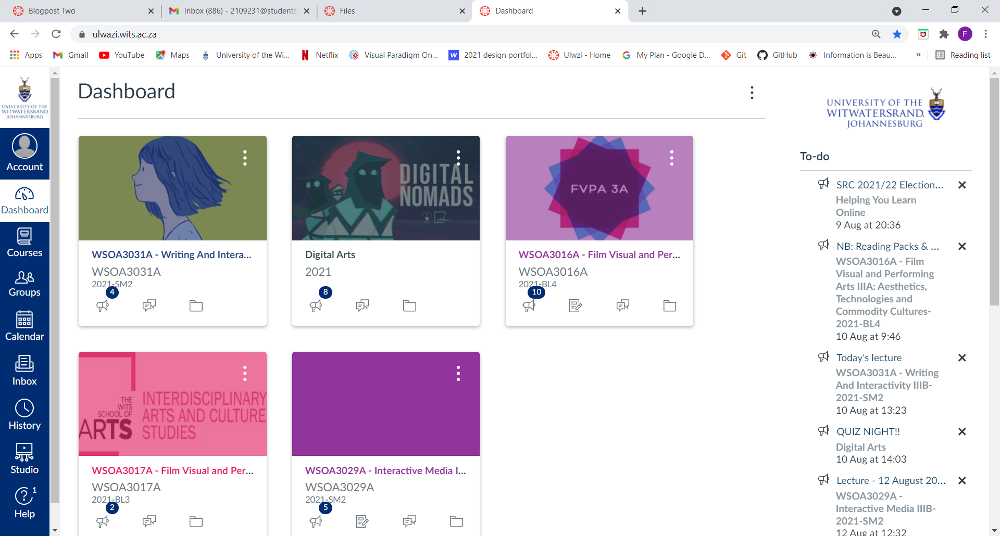

At first glance we see that the home page of Ulwazi looks friendly and simple. The UI (User Interface) looks good, it is clear what you need to click in order to navigate to the desired course. On the right-hand side of the page, we see a list of the most recent announcements, this is a good addition t the page seeing that one can see the most recent notifications from various courses which makes it easy to figure out what to do directly from the home page. On the left of the page are more navigation options that are accompanied by symbols making it easier to figure out where to navigate in order to find the desired web pages. Ultimately the UI of Ulwazi is clean, clear and simple; this is why I believe the UI design is well done.
The UX (User Experience) refers to the site user’s overall experience when interacting with the website. Whilst using Ulwazi I want to find assignments or tasks that I need to do as well as readings and other files. Finding these things need to be easy seeing that people use this website to do university work and do not want to waste time aimlessly navigating the website in search of the required materials. With this in mind I can say that Ulwazi has good UX design seeing that it is clear where to navigate on the site. There are notifications that show you which course has new files, new assignments/tasks, and new announcements. Using the website is easy and fast, which is exactly what is needed from this type of website.
In Kidd’s article, Representation Ch1 Theories of Representation, 2015. He notes and discusses various interesting theories on representation with regards to imagery, photography, journalism, politics and the media. Unfortunately, I failed to see how I could relate any of the points made in the article with the home page of Ulwazi.